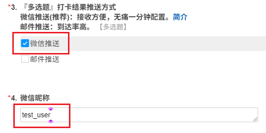

一分钟无痛配置微信推送
1.用微信扫描如下二维码

或者用微信打开此链接 https://work.weixin.qq.com/join/KQuIDaIMiHO7yNfkY8jfRQ/hb_share_mng_mjoin
2.加入企业微信（无需下载企业微信）

3.添加微信插件，用微信扫描如下二维码


- 成员无需下载企业微信客户端，直接用微信扫码关注微信插件，即可在微信中接收企业通知和使用企业应用。
- PS:若二维码过期，请联系 benjia.h@qq.com 更新
4.记录刚刚添加企业时，您的微信名字

5.填写信息收集表
